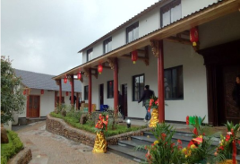
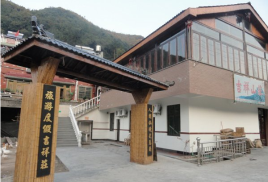
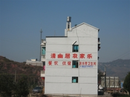
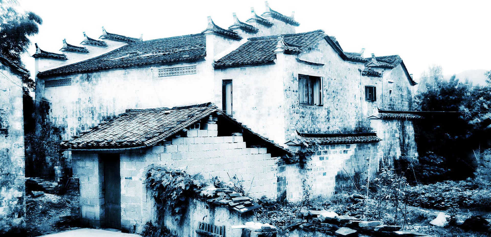
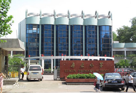
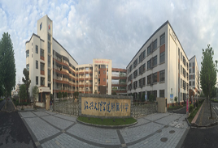

攻略
旅游线路
学农教育

诸暨昊昊山庄
山庄是香榧公园休闲度假示范接待山庄。共有标准客房37间，餐饮包间12只，棋牌、台球、卡拉OK、休闲凉亭、蔬果基地等……

诸暨吉祥山庄
山庄制度健全，经营规范。配备香榧森林公园游客登记簿、餐饮服务食品采购台账等管理资料。卫生安全制度、消防安全制度……

清幽居农家乐
清幽居农家乐，位于风景秀丽的新昌穿岩十九峰风景区的入口处，离售票处200米。清幽居农家乐环境优美，设施齐全，酒店……
泄源快乐营农家乐
农家乐历史悠久，始于1985的诸暨五泄紫云旅游住宿部，2008年更名北门饭店,主营:吃饭/住宿/棋牌……

竹溪村
嵊州市竹溪乡有一个深山古村落——竹溪村，坐落在会稽山主峰脚下，也是小舜江的源头,历史文化悠久，文物古迹比较多……
绍兴中等专业学校
绍兴市中等专业学校于1984年经浙江省人民政府批准建立，是国家级重点职业学校、国家中职德育实验基地学校……
绍兴市第一中学
绍兴市第一中学是浙江省重点中学，浙江省文明单位、先进学校、绿色学校、现代教浙育技术实验学校……

绍兴市鲁迅小学
绍兴市鲁迅小学创建于1954年9月。是新中国成立后绍兴市区政府创办的第一所公立学校。经过四十八年的风雨历程……

绍兴文理学院附属小学
办学理念：适应教育，即让教育适应每位儿童的天性和个性的充分发展。落实“四适”：土壤，实施适合儿童发展的管理……
柯桥区鉴湖小学
学校坚持以“承传书院文化精粹，打造现代精致教育”为办学理念，实施“精致+精品”的发展策略，确立了“构建精品学校……